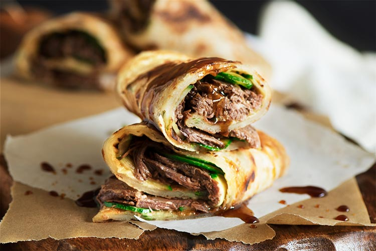

Though similar varieties of scallion pancakes can be found in other Asian countries, in Taiwan they are a common and sought-after treat that is usually enjoyed as a snack or an accompaniment to other dishes. The pancakes are prepared with an unleavened dough that is flattened, sprinkled with sliced scallions, and then rolled and pressed to form a flat pancake that is pan-fried until crispy. Apart from the traditional version, these tasty snacks are occasionally prepared with the same type of dough that is rolled and deep-fried, before it is smeared with a flavorful combination of scallions. Regardless of the varieties, scallion pancakes are a staple street food in Taiwan, especially popular at traditional night markets.
Meal prep time : 1 hour 15 minutes
Servings : 8